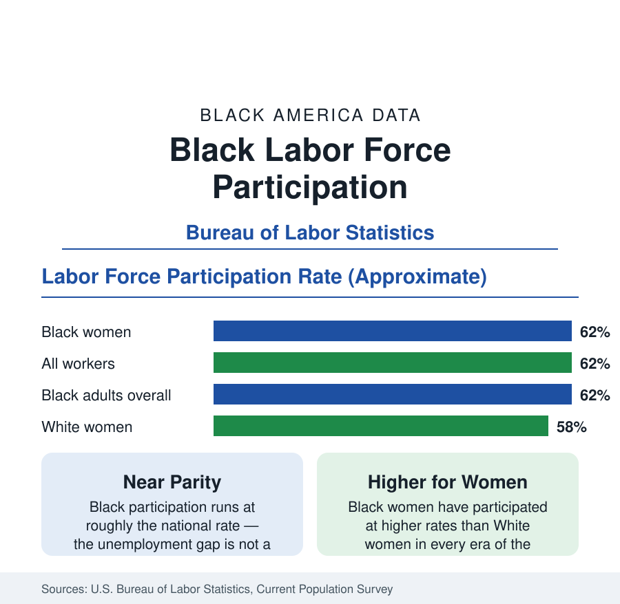

Black Employment
Black Labor Force Participation: Working at National Rates
Black labor force participation runs at roughly the national rate — and Black women participate at higher rates than White women. The BLS participation data.

The labor force participation rate — the share of a population that is working or actively looking for work — is the context statistic for every other figure in this section, and for Black Americans it holds a surprise for readers who know the unemployment data: participation runs at roughly the national rate. In the Bureau of Labor Statistics' annual averages, about 62 percent of Black adults are in the labor force, essentially matching the overall figure of about 62 percent. The unemployment gap documented in this section is therefore not a story of withdrawal from work. This article reports the participation data by age and gender and explains what they establish.
Participation by Gender: The Historic Inversion
The gender breakdown contains one of the oldest continuous facts in American labor data. Black women participate in the labor force at higher rates than White women — about 62 percent against about 58 percent in recent annual averages — and have done so in every era for which the Bureau publishes the comparison, a pattern rooted in the economic necessity that made Black women's paid work a constant of Black family life generations before women's employment became general. Black men's participation, by contrast, runs a few points below White men's — a gap that has widened since the mid-twentieth century, when the two were near equal, and that concentrates among younger men and men without college credentials. The net of the two patterns is the headline parity: the female advantage and the male deficit roughly cancel.
Participation by Age
Age structures participation for every group, and the Black pattern follows the national curve with two deviations. Teenage participation is low and has fallen for decades across the whole economy. Prime-age participation — ages 25 to 54 — is high for Black adults, in the low-to-mid 80 percent range, close to the national prime-age figure, which is the comparison economists weight most heavily because it strips out schooling and retirement. At older ages, Black participation falls off somewhat faster than the national pattern, reflecting the occupational data in this section — heavier representation in physically demanding work — and the disability and health data of the public health pages, which record higher rates of work-limiting conditions in middle age.
The Employment-to-Population Ratio
Participation counts job seekers as well as job holders, so the Bureau's complementary measure — the employment-to-population ratio — gives the share actually working. For Black adults it stands in the high 50s percent, a few points below the national figure, with the difference being precisely the unemployment gap expressed in population terms. Analysts use the ratio to cut through the definitional debate about who counts as looking for work: it shows the Black employment shortfall whole, without reference to search status. During recoveries, the Black ratio's rise — and its lag behind the national one — is the standard gauge of how broadly a recovery is shared, and the measure by which the tight labor markets of recent years recorded their unusually strong Black employment gains.
Discouragement and the Margins
Around the official labor force stand the marginally attached — people who want work and have looked within the year but not in the survey's reference month, including discouraged workers who cite job-market reasons for stopping. These margins are proportionally larger for Black workers in every release, as are involuntary part-time employment and long-term unemployment: Black job seekers who are unemployed remain so substantially longer on median than White job seekers, a duration gap that persists across the cycle. The Bureau's broader underutilization measures, which fold these margins in, therefore show larger Black-white gaps than the headline unemployment rate — an important calibration for readers comparing statistics across sources, since every figure is correct under its own definition.
What the Participation Data Settle
The interpretive value of this article's figures is that they isolate the problem the rest of the section addresses. A population that participates at national rates, whose women participate above national rates, and whose prime-age participation matches the country's, does not have an attachment problem; its unemployment and earnings gaps arise after the decision to work — in hiring, in occupational assignment, in job stability, and in pay. That is where the employment section's remaining articles concentrate: occupation, tenure, displacement, and the industry map of Black work.
Summarized: about 62 percent participation, at the national rate; Black women above White women, as always in the data; Black men a few points below White men; and an employment ratio a few points short, which is the unemployment gap itself viewed from the other side. Work in Black America is not scarce in willingness. The data locate the shortfall in what the labor market returns for it.
More in Black Employment
The Black Unemployment Rate: The Two-to-One Pattern
Black unemployment runs at roughly twice the White rate — 5.5 percent against 3.3 percent in annual averages — a ratio stable across five decades of federal data. How it is measured and why it persists.
Black Median Weekly Earnings: The 80-Cent Ratio
Black full-time workers earn a median of about $900 a week — roughly 80 cents for every dollar White workers earn. The BLS earnings data by group, gender, and occupation.
Black Workers by Occupation: Where Black America Works
About 36 percent of Black workers hold management or professional jobs; about one in five works in service occupations. The BLS occupational distribution and its history.
Source: U.S. Bureau of Labor Statistics, Current Population Survey, annual averages; Employment Situation demographic tables.